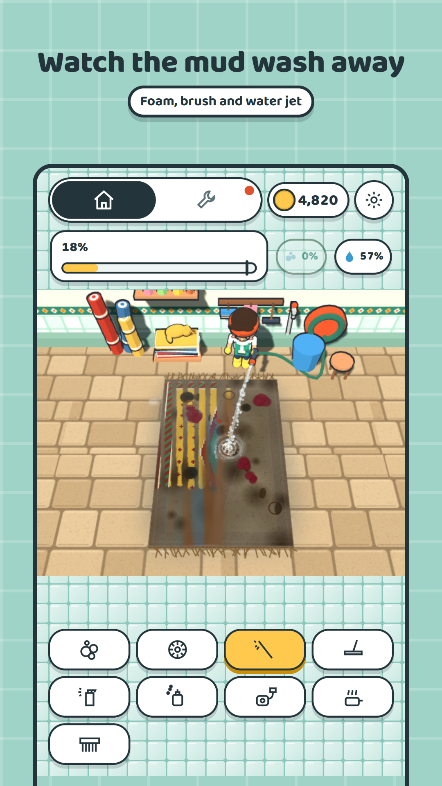
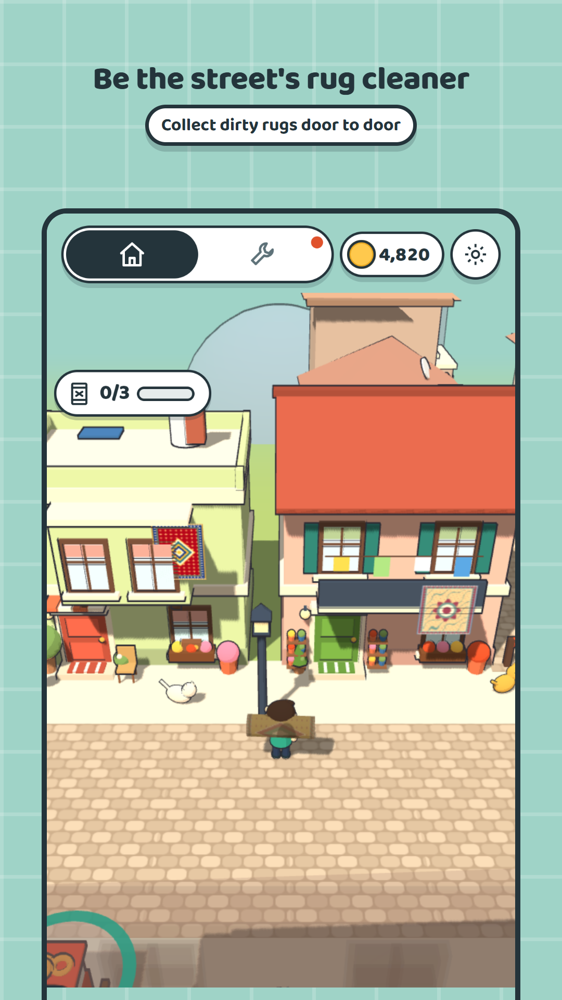
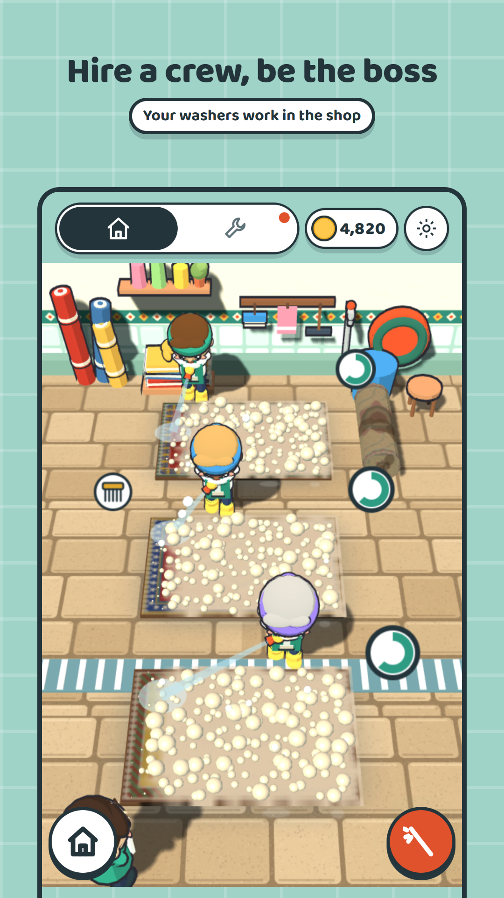

Rugsy: Carpet Wash ASMR
Rugsy is a cozy rug cleaning game set in a 3D Turkish neighborhood. You are the local rug cleaner: you collect dirty rugs at people's doors, wash them in your shop with foam, a brush and a pressure washer, dry them on the line and hand them back. The game is free, plays offline and has no words on screen.
Last updated: November 2, 2026 · Version 1.6



How do you play?
- Collect. Touch the screen and walk the rug cleaner with the joystick. Step into the ring at a door where someone is shaking out a rug, and the dirty rug goes on your shoulder.
- Wash. At the shop counter the wash screen opens. Foam loosens the dirt, the brush scrubs it out, the pressure washer cuts a clean stripe through the mud, and the squeegee pulls off the water.
- Dry. The washed rug hangs on the line in the yard until it's dry.
- Deliver. Carry the dry rug to its owner's door. They wave and pay, the house gets painted, and your rug hangs from their balcony.
What's in the game?
- Tools: foam, brush, pressure washer and squeegee; as you earn, stain remover, rug perfume, a wet vacuum and steam.
- Rugs: doormats, living-room rugs, shaggy rugs, rugs with pet stains, silk and antique rugs. Bright modern designs and Turkish regional weaves such as Uşak, Milas, Bergama, Kayseri, Ladik, Hereke and Yağcıbedir.
- Found in the dirt: a gold earring, a wedding ring, a lost key, amber prayer beads, a marble, an old photo.
- The neighborhood: eight houses, a simit seller, neighbors chatting on stools, kids playing ball in the park, more cats as your work grows, and a pink evening light.
FAQ
Is Rugsy free?
Yes. The game is free. A one-time support pack turns the ads off for anyone who wants it.
Does Rugsy have ads?
Rewarded ads open only when the player taps the button. An interstitial ad appears only between two in-game days, never while you wash a rug. There are no banners.
Can I play Rugsy offline?
Yes. The whole game runs on the phone; only the ads need a connection.
What languages is Rugsy in?
There is nothing to read in the game: it uses icons, colors and numbers, so it can be played in any language.
Is Rugsy suitable for kids?
There is no violence and no reading needed; the screen is driven by icons. Ads are requested as non-personalized.
What do you do in Rugsy?
You walk the neighborhood and pick up dirty rugs at people's doors, wash them in your shop with foam, a brush and a pressure washer, dry them on the line and deliver them to the owner. Every delivery gets the house painted.